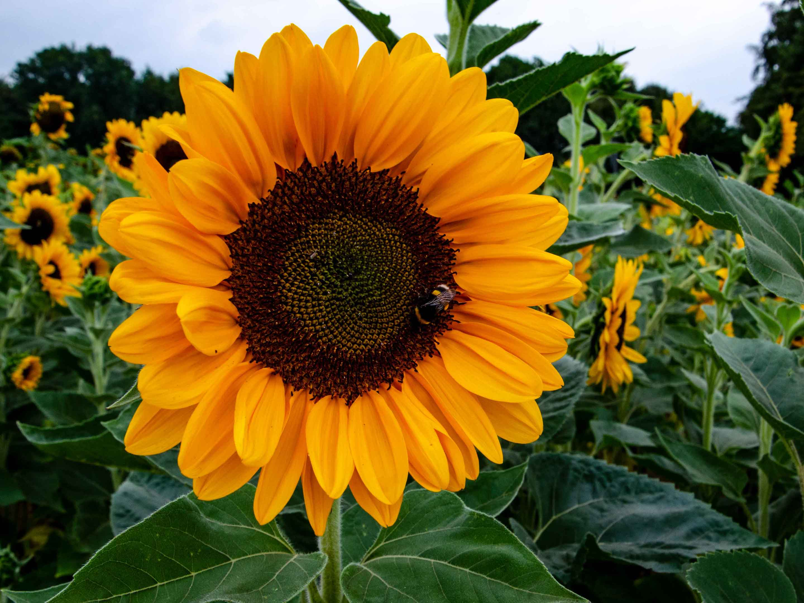
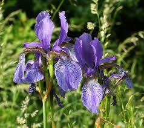

y América del Norte
perenne
África y Asia.

arbustiva perenne
y América Central.

La etiqueta principal que se utiliza para crear una tabla en HTML es la etiqueta <table></table>
Para definir una tabla se utiliza la etiqueta <tr></tr>
La etiqueta que se utiliza para poder crear una celda de encabezado en una tabla
es <th></th>
La etiqueta utilizada para crear una celda de datos en un tabla es <td></td>
Se utilizan los atributos "rowspan" y "colspan" para especificar cuántas columnas debe abarcar una celda.
Se utiliza el atributo "rowspan".
Se debe usar la etiqueta <tr> y se debe utilizar 10 veces.
| Flor | Tipo | Nombre | Locación | Imagen |
|---|---|---|---|---|
| Rosa | Arbusto | Rosa spp. | Europa, Asia y América del Norte |
|
| OrquÁdea | Planta herbácea perenne |
Orchidaceae | América Central, América del Sur, África y Asia. |
|
| Girasol | Planta herbácea anual | Helianthus annuus | América del Norte |  |
| Lirio | Planta herbácea perenne | Lilium spp. | Eurasia y América del Norte |  |
| JazmÁn | Planta trepadora o arbustiva perenne |
Jasminum spp | Mediterráneo, Asia y América Central. |
|
| PaÁs: | Posición: | Piloto: | PTS | BRN | SAU | AUS | JPN | CHN | MIA | ITA | MON | CAN | ESP | AUT | GBR | HUN | BEL |
|---|---|---|---|---|---|---|---|---|---|---|---|---|---|---|---|---|---|
 |
1ª | Max Verstappen | 277 | 26 | 25 | - | 26 | 33 | 26 | 25 | 8 | 25 | 25 | 18 | 18 | 10 | 12 |
 |
2ª | Lando Norris | 199 | 8 | 4 | 15 | 10 | 21 | 25 | 18 | 12 | 18 | 19 | 6 | 15 | 18 | 10 |
| 3ª | Charles Leclerc | 177 | 12 | 16 | 19 | 12 | 17 | 22 | 15 | 25 | - | 10 | 2 | - | 12 | 15 | |
 |
4ª | Oscar Piastri | 167 | 4 | 12 | 12 | 4 | 6 | 3 | 12 | 18 | 10 | 6 | 25 | 12 | 25 | 18 |
 |
5ª | Carlos Sainz | 162 | 15 | - | 25 | 15 | 14 | 14 | 10 | 15 | - | 8 | 19 | 11 | 8 | 8 |
|
6ª | Lewis Hamilton | 150 | 6 | 2 | - | 2 | 9 | 8 | 8 | 7 | 13 | 15 | 15 | 25 | 15 | 25 |